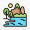
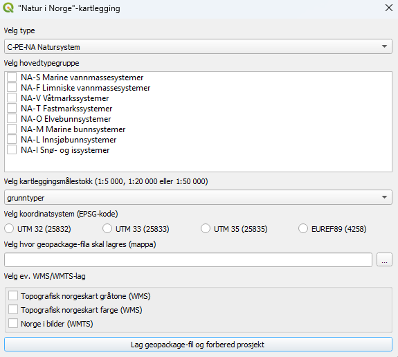
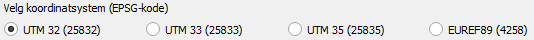
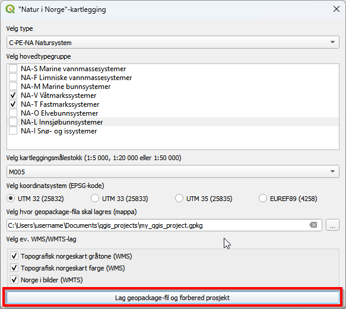
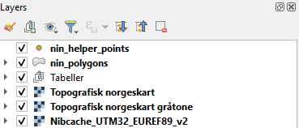
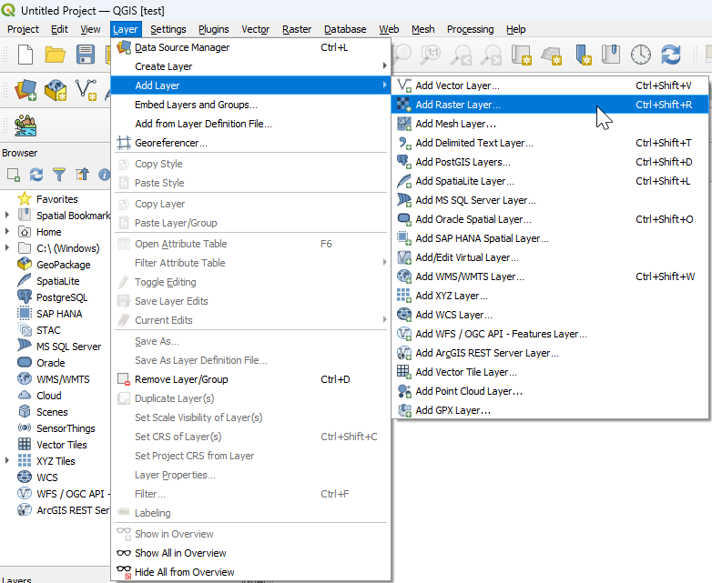

3 Oppsett og tilrettelegging
Åpne QGIS (versjon 3.34 eller nyere).
3.1 Installer programtillegg
Sørg for at du har tilgang på internett. Dette er nødvendig for å laste ned programtillegget.
3.2 Opprett prosjekt
3.2.1 Klikk på ikonet for Natur i Norge kartlegging

Det vil dukke opp et vindu med flere valgmuligheter.

3.2.2 Velg kategorier som skal være tilgjengelige under kartleggingen
Et prosjekt kan kun inneholde ett typesystem, men det er mulig å velge flere hovedtypegrupper fra samme typesystem. Et prosjekt kan kun inneholde kategorier fra én kartleggingsmålestokk.
3.2.3 Huk av én av boksene for å velge koordinatsystem
Man kan kartlegge i meter (UTM-sone) eller i geografiske koordinater (lengde- og breddegrad). Ønsker man UTM-koordinater, velger man sone (32, 33 eller 35) ut fra hvor kartleggingen skal foregå. Sone 32 inkluderer Sør-Norge t.o.m. Trøndelag. Sone 33 brukes for Nordland og Troms, mens sone 35 brukes for Finnmark.

3.2.5 Velg ev. WMS/WMTS-lag
Topografiske kart og flybilder er viktige hjelpemidler under kartlegging. Her kan du velge hvilke(t) kartlag som skal importeres til prosjektet.
3.2.6 Klikk på Lag geopackage-fil og forbered prosjekt nederst i vinduet

Under Hvor skal NiN-kartlagene og oppsettet legges? velger du ett av to alternativer:
- Lag et nytt QGIS-prosjekt: et prosjekt med filnavnet
NiN_kartlegging.qgzopprettes i mappa du valgte under Velg hvor geopackage-fila skal lagres. Dette er standardvalget. - Bruk QGIS-prosjektet som er åpent nå: NiN-kartlagene og oppsettet legges inn i prosjektet du allerede har åpent (for eksempel et prosjekt med egne bakgrunnskart og data), og prosjektet lagres med sitt eget filnavn og koordinatsystem. Valget er bare tilgjengelig når det åpne prosjektet er lagret til fil.
I begge tilfeller opprettes en .gpkg-fil med kartlag og tabeller i den valgte mappa. Prosjektet med .gpkg-filen kan igjen åpnes fra denne filplasseringen senere. Kartlagene vil åpnes med prosjektet med mindre .gpkg-filen flyttes til et annet område. .gpkg-filen inneholder følgende:

Opprettede kartlag og tabeller:
nin_helper_points – punktkartlag for å hjelpe kartleggeren i felt
nin_polygons_<målestokk> (f.eks. nin_polygons_M005) – polygonkartlag for å registrere kartleggingsenheter i felt
nin_points_<målestokk> – punktkartlag for naturtyper som er for små til å tegnes som polygon (f.eks. kilder)
nin_lines_<målestokk> – linjekartlag for linjeformede strukturer (f.eks. bergvegg)
Tabeller – tabeller som inneholder typene og variablene som brukes i typesystemene
Importerte kartlag (avhengig av valgene i vinduet):
Topografisk norgeskart – landsdekkende kart med høydekoter og hovedøkosystemer som farger
Topografisk norgeskart gråtone – landsdekkende kart med høydekoter og hovedøkosystemer i gråtoner
Nibcache_UTM32_EUREF89_v2 – landsdekkende sammenstilte nyeste flybilder
3.2.7 Norge i bilder: brukernavn og token
Flybildene i kartlaget Norge i bilder (WMTS) hentes fra Kartverkets tjeneste Norge i bilder (NiB). Tjenesten er ikke åpen for alle: tilgang gis til partene i Norge digitalt og til andre som har inngått avtale om tilgang til dataene. Se Geonorges side om Norge i bilder-tjenestene for detaljer og oppdaterte tjenesteadresser.
1. Skaff en GeoID-bruker med tilgang til Norge i bilder
Brukernavn og passord er en GeoID-bruker, det samme du logger inn med på https://norgeibilder.no/. Har du ikke en slik bruker, kan du be om tilgang via Kartverkets skjema for BAAT-tilgang. Spørsmål om tilgang og partsavtale rettes til kundesenter@kartverket.no.
2. Lag et token
Alle NiB-tjenestene (WMS og WMTS) krever et token i tillegg til brukeren. Tokenet lages på https://services.norgeibilder.no/token:
- Logg inn med GeoID-brukernavn og -passord.
- Under Client velger du hva tokenet skal knyttes til. Velg IP address (tokenet virker bare fra IP-adressen du lager det fra) når du skal bruke det i QGIS på samme maskin og nett. HTTP Referer er beregnet på nettsider.
- Velg gyldighetstid under Expiration. Tokenet er tidsbegrenset (fra én time til én uke er det som Geonorge oppgir). Velg lang nok tid til å dekke feltperioden, og lag et nytt token når det er utløpt.
- Klikk Generate Token og kopier hele tekststrengen som vises.
Merk: fordi tokenet er knyttet til IP-adressen, må du lage et nytt token dersom du bytter nett (for eksempel fra kontoret til mobilt bredbånd i felt) eller når det er utløpt.
3. Lim inn tokenet i programtillegget
Huk av Norge i bilder (WMTS) i vinduet. Når du klikker på Lag geopackage-fil og forbered prosjekt, blir du bedt om tokenet. Lim inn hele tekststrengen fra token-siden (den vises som prikker). Brukernavn og passord skal ikke oppgis i programtillegget; de brukes bare når du lager tokenet.
Programtillegget lagrer tokenet som en autentiseringskonfigurasjon i QGIS med navnet NiN plugin: Norge i bilder, og QGIS sender det med i alle forespørsler til tjenesten (som X-Esri-Authorization-hode, slik Geonorge beskriver). Første gang kan QGIS be deg om å opprette et hovedpassord for autentiseringsdatabasen; det er QGIS sitt eget passord for å beskytte lagrede tokener, ikke GeoID-passordet ditt. Konfigurasjonen finner du igjen under Innstillinger → Alternativer → Autentisering, og den oppdateres automatisk når du limer inn et nytt token i programtillegget.
Slipp å lime inn hver gang: legg tokenet i miljøvariabelen NIN_NIB_TOKEN, eller oppgi ID-en til en egen autentiseringskonfigurasjon i miljøvariabelen NIN_NIB_AUTHCFG.
4. Hvis det ikke virker
Programtillegget kontrollerer innloggingen mot Norge i bilder før kartlaget legges til. Dersom tjenesten avviser tokenet, eller ikke kan nås, får du en melding om dette når prosjektet er opprettet, og kartlaget blir ikke lagt til. Kontroller da at tokenet er limt inn i sin helhet, at det ikke er utløpt, og at du er på samme nett som da tokenet ble laget. Lag eventuelt et nytt token og opprett prosjektet på nytt. Knappen Info om NiB-token ved siden av avkryssingsboksen åpner denne siden.
3.3 Tilpass prosjekt
3.3.1 Legge til vektordata
Vektordata består av objekter med en gitt geometri – punkt, linje eller polygon – der hvert objekt representerer én verdi eller egenskap.
Punkter har en posisjon, men verken lengde eller areal. Et eksempel er artsobservasjoner, som kan være nyttige under naturtypekartlegging. Dette kan lastes ned fra Artsdatabanken
Linjer registreres med hjørnekoordinater, har lengde, men ikke areal. Et eksempel er høydekoter, som gir informasjon om terrenget. Topografiske forhold påvirker fuktighet, vindeksponering og solinnstråling – faktorer som er avgjørende for naturtypers utbredelse. Høydekurver fra N50 kan fritt lastes ned fra geonorge. FKB-Høydekurve krever at man har brukernavn og passord.
Polygoner har både lengde og areal. Et polygonkartlag over verneområder fra kan være nyttig, eller man kan lage egne polygonlag for å avgrense studieområdet.
Relevante vektordata kan lastes ned fra [geonorge] (https://www.geonorge.no) hvor man kan taste inn navnet på datasettet man søker, f.eks. artsobs og vern. Da får man opp ei liste med tilgjengelige datasett. Enkelte datasett vil kreve innlogging (at man har brukernavn og passord). F.eks. er Høydekurver fra N50 fritt tilgjengelig fra geonorge, mens FKB-Høydekurve krever innlogging. Lagre nedlasta data i ei mappe før du laster dem inn i QGIS.
3.3.2 Legge til rasterdata
Rasterdata består av et rutenett der hver rute (celle) har én verdi. Formatet brukes ofte for bilder og modellerte kart, og egner seg godt til visualisering av bakgrunnsdata.
Flybilder er viktige hjelpemidler i naturtypekartlegging. Dersom du har tilgang på flybilder av høyere kvalitet enn det som er tilgjengelig i WMS-kartlaget som importeres via programtillegget, kan disse importeres manuelt. Historiske flyfoto kan også gi verdifull informasjon om tidligere landskapsbruk og endringer over tid. Flybilder kan lastes ned fra Norge i bilder om man har brukernavn og passord.
Terrengmodeller viser høyden på bakken over havet og er nyttige for å analysere terreng og topografiske forhold. Overflatemodeller inkluderer i tillegg bygninger, trær og annen vegetasjon som stikker opp fra bakken. Begge typer modeller kan lastes ned fra Høydedata.no.
Last ned rasterdata som .tif eller ‘.GeoTIFF’-filer og lagre dem i en mappe før import i QGIS.
3.3.2.1 Gå til Layer → Add Layer i menylinjen og klikk på Add Raster Layer...

Det vil nå dukke opp et vindu.